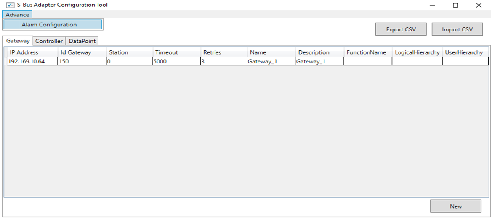
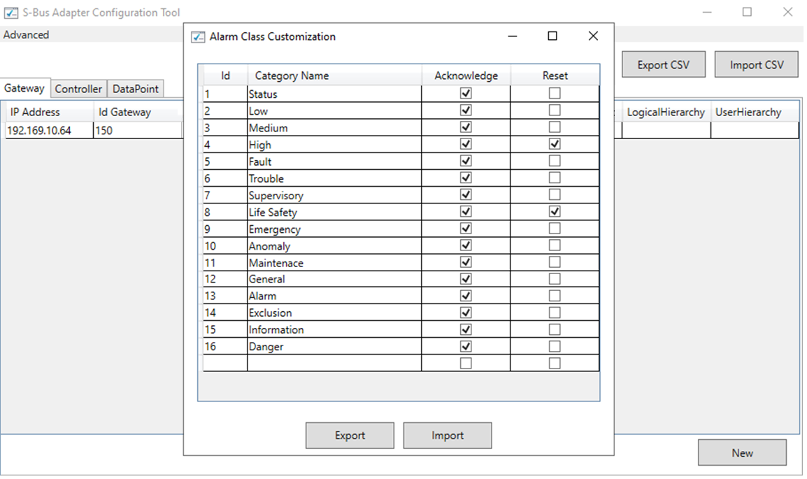

Configuring the S-Bus Object Structure and Alarm Control
To configure the S-Bus structure in Desigo CC, use the SBusAdapterConfiguratorTool.
Start the Configuration Tool
- Start Windows Explorer and navigate to the installation folder \AdditionalSW\SBusAdapter_ConfigurationTool\.
- Start SBusAdapterConfiguratorTool.exe
- The tool opens and presents a user interface organized in three tabs: Gateway, Controller, and Datapoint, where you can configure the corresponding gateway, controller, and datapoint objects of your S-Bus system.

Import the S-Bus Configuration
- Select Import CSV to load the configuration from a compatible CSV file.
See S-Bus CSV Format. - The Import CSV dialog box displays.
- Browse to the file location and click OK.
- The tool displays the configuration elements.
Enter or Modify the S-Bus Configuration
- In the Gateway tab, click New to add a new gateway, or double click a gateway in the list to modify it.
- The Gateway Configuration page displays.
- Based on the S-Bus configuration, enter or modify the following parameters:
- IP Address
- Gateway ID
- Station
- Timeout
- Retries
- Name
- Description
- Function Name (Desigo CC function name, optional)
- Logical Hierarchy (Desigo CC logical hierarchy path, optional; for example: \Site_A\)
- User Hierarchy (Desigo CC user hierarchy path, optional; for example: \Building_A\)
- Click Apply.
- Select the Controller tab, click New to add a new controller, or double click a controller in the list to modify it.
- The Controller Configuration page displays.
- Based on the S-Bus configuration, enter or modify the following parameters:
- Gateway ID
- Station Number
- Name
- Description
- Function Name (Desigo CC function name, optional)
- Logical Hierarchy (Desigo CC logical hierarchy path, optional; for example: \Site_A\Controller_1A\)
- User Hierarchy (Desigo CC user hierarchy path, optional; for example: \Building_A\Area_1A\)
- Click Apply.
- Select the Datapoint tab and click New to add a new datapoint, or double click a datapoint in the list to modify it.
- The Datapoint Configuration page displays.
- Based on the S-Bus configuration, enter or modify the following parameters:
- Gateway ID
- Station Number
- Register Name
- Register Type: R, RFLOT, F
- Register Address
- Read/Write
- Name
- Description
- Alias
- Function Name (Desigo CC function name, optional)
- Min
- Max
- Resolution
- Scaling Factor (register value multiplier; for example,
0.1causes 185 to appear as 18.5) - Eng Unit
- Text Group
- Alarm Type
- Alarm Value
- Logical Hierarchy (Desigo CC logical hierarchy path, optional; for example: \Site_A\Controller_1A\Reg00\)
- User Hierarchy (Desigo CC user hierarchy path, optional; for example: \Building_A\Area_1A\Reg01\)
- Message Text
- Polling Rate
- NameOwlBitString
NOTE: If the datapoint represents multiple Desigo CC properties (bitstring split), define the bitstring map in a specific OWL file (in the Individuals section, see S-Bus Bitstring Split Mapping) and specify the OWL filename here. For example, GMS_SBus_Aggregator_Bitstring_150. - Click Apply.
NOTE1: In the Controller and Datapoint tabs, use the selection fields to filter the item list.
NOTE 2: Double click an item in the lists and select Delete to remove it.
Customize Alarm Control Commands
- In Advanced, select Alarm Configuration.
- The Alarm Class Customization dialog box displays.
- For each alarm category, set Acknowledge and/or Reset if you want to enable the corresponding event control command.
- Select Export to save the alarm configuration.
- In the adapter folder, the alarm configuration is saved in the AlarmTable.conf file.
NOTE: To reimport the configuration file, select Import.

Save the Configuration
- Select Export CSV to export the configuration.
- The Save As dialog box displays.
- Browse to the destination location. Save it into the Adapter folder to install it.
- Stop and restart the adapter to activate the new configuration.